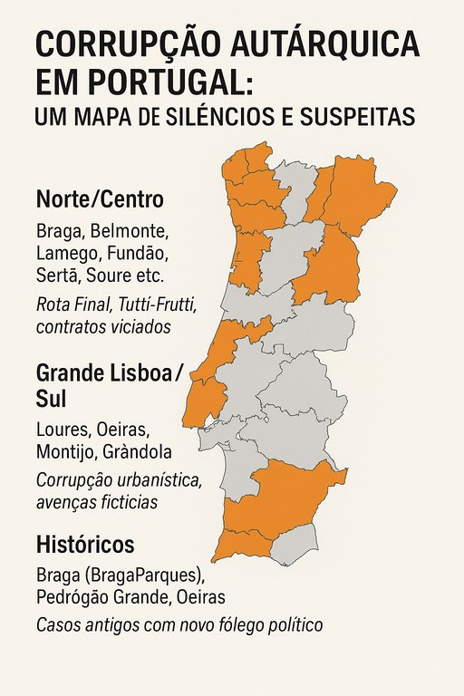

Publicado em 2025-07-13 17:31:29
De norte a sul, o poder local em Portugal carrega nas suas fundações manchas de suspeição, redes de compadrio e escândalos enterrados em burocracias. A ideia romântica da democracia de proximidade tem vindo a ceder perante uma realidade mais crua: a corrupção nas autarquias não é episódica — é sistémica.
Em 2019, a Polícia Judiciária lançou a Operação Rota Final, uma das maiores investigações autárquicas em território nacional. Foram 18 Câmaras Municipais visadas, sobretudo no Norte e Centro do país, com suspeitas que vão desde corrupção passiva e ativa até viciação de procedimentos e favorecimento indevido:
Estas investigações apontam para práticas recorrentes de favorecimento em concursos públicos, fracionamento de contratos e nomeações cruzadas entre amigos, sócios ou familiares.
Nos últimos meses, em pleno 2025, voltaram os holofotes sobre as autarquias:
Estes casos mostram que o vírus da corrupção continua vivo e, frequentemente, imune ao escrutínio democrático.
Várias figuras públicas e municípios voltam a aparecer, com episódios mais antigos que continuam a ecoar:
Segundo estudos do Observatório de Economia e Gestão de Fraude (OBEGEF), mais de 48% dos casos de corrupção identificados em Portugal envolvem órgãos da administração local. A proximidade ao poder, a opacidade nos processos e a passividade cívica criam o terreno fértil para este enraizamento.
| Região | Municípios / Freguesias Envolvidas | Operações / Suspeitas |
|---|---|---|
| Norte / Centro | Braga, Belmonte, Lamego, Fundão, Sertã, Soure, etc. | Rota Final, Tutti‑Frutti, contratos viciados |
| Grande Lisboa / Sul | Loures, Oeiras, Montijo, Grândola | Corrupção urbanística, avenças fictícias |
| Históricos | Braga (BragaParques), Pedrógão Grande, Oeiras | Casos antigos com novo fôlego político |
O combate à corrupção autárquica precisa mais do que promessas: precisa de ações concretas:
Enquanto se tolerar o pequeno feudo local disfarçado de “presidência de câmara”, Portugal continuará a ser um país preso a si mesmo — uma democracia adiada em cada junta e câmara onde a lei é moldada pelo compadrio.
Porque um país começa nas suas freguesias. E é aí que também se pode começar a limpá-lo.
Uma investigação de Augustus Veritas Lumen
NOTA: Caso esteja interessado em mais detalhes e facto, poderá deixar o seu contacto nesta publicação e nos faremos a investigação de casos específicos.